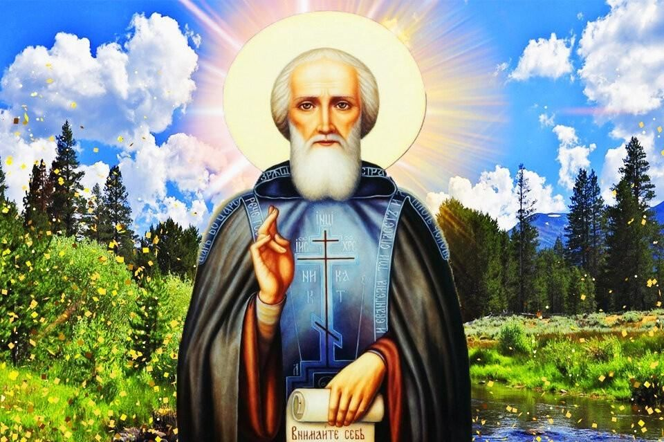

Галерея



Присоединяйтесь к нашим путешествиям по священным местам, связанным с жизнью и служением преподобного Сергия Радонежского. Откройте для себя его духовные учения и вдохновитесь его примером.
Начать путешествие